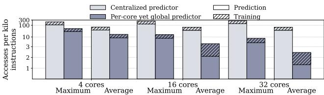
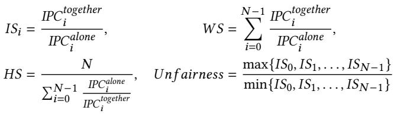
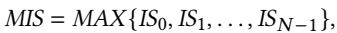
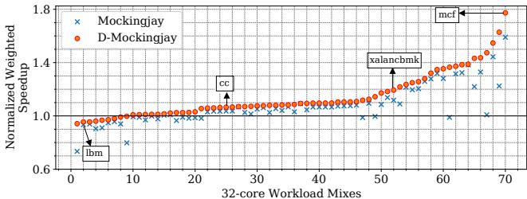
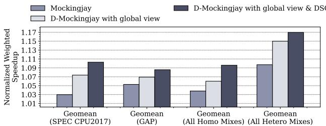
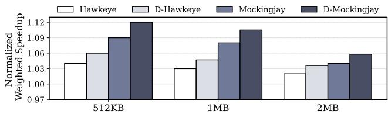
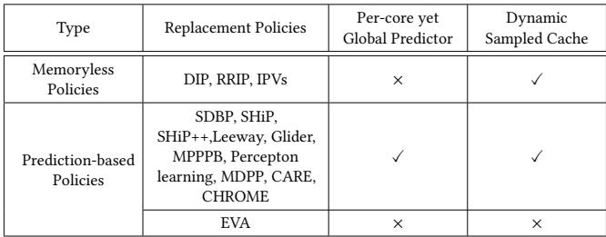

Drishti: Do Not Forget Slicing While Designing Last-Level Cache Replacement Policies for Many-Core Systems 图表详解¶
Loads of PCyfrom core 30: A,B,C,.., H Figure 1: Mockingjay with per-slice per-core reuse predictor on a sliced LLC-based 32-core system. Each slice has a predictor, indexed with a hash of PC and core ID.¶

- 该图描绘了一个32核系统中，Mockingjay替换策略在分片LLC架构下的工作流程，核心关注点是PCy（程序计数器）从Core 30发出的负载序列A, B, C, ..., H。
- 图中清晰展示了分片式设计：整个LLC被划分为32个独立的Slice（Slice 0到Slice 31），每个Slice都配备了自己的采样缓存（Sampled Cache）和预测器（Predictor）。
- 负载散列与映射：来自Core 30的负载请求（如A, D）根据其地址被路由到不同的Slice（例如Slice 0）。图中标注了具体的映射关系：
- Load A, D → Slice 0
- Load G, H → Slice 2
- Load E, F → Slice 30
- Load B, C → Slice 1
- 本地化处理：每个Slice内的采样缓存负责记录其接收到的负载访问行为。随后，这些信息用于训练位于同一Slice内的预测器。这种设计意味着每个预测器仅能“看到”并学习分配给其所在Slice的访问模式，导致了论文中提到的近视预测（Myopic predictions）问题。
- 预测器结构：图中显示每个Slice包含多个预测器实例，这对应于论文中描述的“per-slice per-core reuse predictor”，即预测器条目由PC和Core ID的哈希值索引，以区分不同核心的相同PC行为。
- 互连网络：图底部标注了“Interconnect”，表明各个Slice之间通过片上互连网络进行通信，这是多核系统的基础架构。
- 流程步骤：图中的数字标记了事件顺序：
- Core 30发出负载请求。
- 请求被路由到相应的Slice。
- Slice内的采样缓存记录访问，并更新其本地的预测器。
- 关键局限性：此架构的核心问题是，由于负载被分散到不同Slice，一个特定PC（如PCy）的所有访问行为无法被单一预测器完整观察。每个预测器只能基于其局部视图进行训练，从而降低了预测准确性，尤其是在核心数量增加时，这种“近视”效应会更加严重。这正是论文提出Drishti增强方案所要解决的根本问题。
1970890555c7f00a5cf660d3b688d30bff1dc943809016e826a17962ca70f36a.jpg¶

- 图片展示了在 16-core workload mixes 下，每个核心中 PCs (Program Counters) 的负载请求被映射到 单一 LLC slice 的比例分布。
- 纵轴为 Fraction of PCs (%)，表示每个核心中 PC 映射到单个 LLC slice 的百分比；横轴为 16-core workload mixes，共 70 个混合工作负载（35 个同构 + 35 个异构）。
- 数据点显示，平均 66.2% 的 PCs（每个核心）的负载请求仅映射到一个 LLC slice，表明存在显著的 myopic behavior。
- 在部分工作负载（如 xalan，对应图中第 20 个混合）中，约 40% 的 PCs 仅映射到一个 slice，导致其预测器训练数据高度局部化，预测准确性下降。
- 散点图趋势表明，随着工作负载混合的变化，该比例波动较大，但整体集中在 50%-80% 区间，说明 PC 分散性普遍存在，是影响全局重用预测准确性的关键因素。
- 此图用于支撑论文中 Observation I: Myopic predictions，强调在 sliced LLC 架构下，本地预测器因缺乏全局访问信息而做出次优决策。
| 工作负载混合索引 | 映射到单一 LLC slice 的 PCs 比例 (%) |
|---|---|
| 20 (xalan) | ~40% |
| 平均值 | 66.2% |
| 多数区间 | 50% - 80% |
- 该图未受 LLC replacement policies 或 hardware prefetching 影响，反映的是底层地址映射与切片分布的固有特性。
Figure 2: Fraction of PCs per core(excluding those that bring only a single load) mapping demand loads to one LLC slice throughout their execution for 16-core mixes (35 homogenous and 35 heterogenous created from SPEC CPU2017 and GAP).The higher, the better. Figure 3: ETR values corresponding to the loads of PC 0x59cdbf with Mockingjay when the predictor sees global view, myopic view, and the oracle view of access pattern on a 16-core system running a homogeneous mix of xalan.¶

- 图片展示了在16核系统上运行xalan工作负载时，Mockingjay替换策略下PC 0x59cdbf对应的ETR值预测结果，对比了三种不同视角：Global view（全局视图）、Myopic view（近视视图）和Oracle view（理想视图）。
- 横轴为Core-ID（核心ID），从1到15，代表不同核心的观测数据；纵轴为ETR Values（Estimated Time Remaining），表示预测的剩余重用时间。
- Global view用深蓝色实心圆点表示，其ETR值分布相对集中且稳定，整体接近Oracle view，表明全局训练能更准确捕捉跨切片的重用行为。
- Myopic view用浅灰色空心圆圈表示，每个核心对应多个点（最多16个），反映各LLC切片独立训练导致的预测分散性。这些点明显偏离Global view和Oracle view，尤其在部分核心（如Core 1, 3, 7, 11）出现极端低值或高值，说明局部采样导致预测偏差大、准确性下降。
- Oracle view用红色实心圆点表示，代表真实重用距离，作为基准。可见Global view与Oracle view高度吻合，而Myopic view则波动剧烈，误差显著。
- 数据表明，在多核切片式LLC架构中，若沿用每切片独立预测器（Myopic view），会导致预测精度严重退化，进而影响替换决策质量。而采用全局共享预测器（Global view）可有效缓解该问题，提升性能。
| 视角类型 | 标识符号 | 特征描述 | 预测准确性 |
|---|---|---|---|
| Global view | 深蓝实心圆 | 跨所有切片训练，预测稳定且贴近真实值 | 高 |
| Myopic view | 浅灰空心圆 | 每切片独立训练，预测分散、波动大 | 低 |
| Oracle view | 红色实心圆 | 实际重用距离，作为理想基准 | 最高 |
- 此图直观验证了论文提出的“近视行为”问题：随着核心数增加，同一PC的访问被分散到不同LLC切片，本地预测器无法获得完整访问模式，从而做出次优甚至错误的替换决策。Drishti方案通过引入per-core global predictor，正是为了克服这一根本缺陷。
Figure 4: Frequency distributionofETRs and RRIPs in Mockingjay and Hawkeye for xalan and pr running ona16-core system¶

- 图片展示了在16核系统上，针对xalan和pr两个工作负载，Mockingjay与Hawkeye两种替换策略在“全局视图”（Global view）与“近视视图”（Myopic view）下预测值的频率分布对比。
- 核心观察：近视视图导致预测值分布发生显著偏移，偏离全局视图，从而降低预测准确性。
- 子图 (a) ETR values in xalan with Mockingjay：
- 全局视图下，ETR值主要分布在0-31区间（约45%）和64-128区间（约55%），无32-63区间值。
- 近视视图下，0-31区间占比骤降至约10%，64-128区间升至约75%，并出现少量32-63区间值（约15%）。
- 表明在xalan负载下，近视视图严重低估了短重用距离（0-31），高估了长重用距离（64-128）。
| 视图 | ETR 0-31 (%) | ETR 32-63 (%) | ETR 64-128 (%) |
|---|---|---|---|
| Global | ~45 | 0 | ~55 |
| Myopic | ~10 | ~15 | ~75 |
- 子图 (b) ETR values in pr with Mockingjay：
- 全局视图下，ETR值几乎全部集中在0-31区间（>95%），其余区间可忽略。
- 近视视图下，0-31区间仍占主导（~90%），但出现了少量32-63和64-128区间值。
- 表明pr负载本身重用模式集中，近视视图虽有轻微扰动，但影响相对较小。
| 视图 | ETR 0-31 (%) | ETR 32-63 (%) | ETR 64-128 (%) |
|---|---|---|---|
| Global | >95 | \<5 | 0 |
| Myopic | ~90 | ~5 | ~5 |
- 子图 (c) RRIP values in xalan with Hawkeye：
- 全局视图下，RRIP=0（cache-friendly）占比极低（\<5%），RRIP=7（cache-averse）占比极高（>95%）。
- 近视视图下，RRIP=0占比大幅上升至约40%，RRIP=7占比下降至约60%。
- 表明近视视图错误地将大量本应标记为“cache-averse”的块识别为“cache-friendly”，导致替换决策失误。
| 视图 | RRIP 0 (%) | RRIP 7 (%) |
|---|---|---|
| Global | \<5 | >95 |
| Myopic | ~40 | ~60 |
- 子图 (d) RRIP values in pr with Hawkeye：
- 全局视图下，RRIP=0占比约60%，RRIP=7占比约40%。
- 近视视图下，RRIP=0占比进一步上升至约75%，RRIP=7占比下降至约25%。
- 表明在pr负载下，近视视图同样倾向于过度预测“cache-friendly”，但其基础分布与xalan不同。
| 视图 | RRIP 0 (%) | RRIP 7 (%) |
|---|---|---|
| Global | ~60 | ~40 |
| Myopic | ~75 | ~25 |
- 综合结论：无论使用Mockingjay还是Hawkeye，近视视图均会扭曲预测值的分布，尤其在xalan这类负载上影响巨大。这种扭曲源于PC访问被分散到不同LLC切片，导致每个切片的本地预测器仅基于局部、不完整的访问历史进行训练，最终做出次优甚至错误的替换决策。这验证了论文中关于“myopic predictions”的核心论点。
Figure 5: Miss per kilo accesses (MPKA) per LLC set with three different 16-core homogeneous workloads.¶

- 图片展示了三个不同 16 核同构工作负载（mcf、gcc、lbm）下，每个 LLC 集合的 Miss per Kilo Accesses (MPKA) 分布情况，横轴为 Set（集合编号），纵轴为 Slice（切片编号），Z 轴为 MPKA 值。
- 图 (a) mcf：MPKA 值分布极不均匀，颜色从深蓝（低 MPKA，约 100）到亮黄（高 MPKA，约 500）过渡明显。部分集合 MPKA 极低，而另一些则显著偏高，表明该工作负载对 LLC 集合的访问存在强烈倾斜。
- 图 (b) gcc：MPKA 分布相对 mcf 更均匀，但仍存在局部波动。大部分集合 MPKA 在 750 至 925 之间，颜色以绿色和黄色为主，少数区域出现蓝色（低 MPKA）或深紫色（极高 MPKA），说明其访问模式虽较均衡，但仍有部分集合被频繁访问。
- 图 (c) lbm：MPKA 值高度一致，所有集合均呈现相近的青绿色，数值集中在 960 至 1040 区间。这表明 lbm 是典型的流式工作负载，对所有 LLC 集合的访问频率几乎相同，无明显热点。
- 三张图共同揭示了不同工作负载对 LLC 集合访问行为的差异性，这对设计高效采样缓存策略至关重要。若随机选择采样集合，可能因未覆盖高 MPKA 集合而导致预测精度下降。
| 工作负载 | MPKA 分布特征 | 颜色范围 | 访问模式类型 |
|---|---|---|---|
| mcf | 极度不均匀 | 深蓝 → 亮黄 | 强烈倾斜 |
| gcc | 相对均匀，有局部波动 | 绿 → 黄，少量蓝/紫 | 较均衡，有热点 |
| lbm | 高度一致 | 统一青绿 | 流式，均匀访问 |
a414717151ed11725279a36c126d05e1e6488e3fe8c84436b02d3fb137d31f89.jpg¶

- 该图片为一张小型数据表格，源自论文第3.2节“Under-utilized sampled cache”，用于展示在16核系统上运行
mcf工作负载时，不同采样集选择策略对Mockingjay替换策略性能的影响。 - 表格包含两行三列，第一行为表头，第二行为性能提升百分比数据。
- 表头清晰标明了三种不同的实验案例（Case I, II, III），分别对应不同的LLC采样集选择方法。
- 数据行显示了每种案例下的性能加速比（Speedup%），具体数值如下：
| Case | I | II | III |
|---|---|---|---|
| Speedup(%) | 16.4 | 8.3 | 9.5 |
- Case I：选择MPKA（Miss per Kilo Access）最高的32个LLC集合作为采样集，获得了16.4%的最高性能提升。
- Case II：选择MPKA最低的32个LLC集合作为采样集，性能提升仅为8.3%，是三种情况中最差的。
- Case III：混合选择，一半（16个）为高MPKA集合，另一半（16个）为低MPKA集合，性能提升为9.5%，介于前两者之间。
- 该结果有力地支持了论文的核心论点之一：随机选择采样集会导致次优决策，而基于访问频率（如MPKA）动态选择高需求集合能显著提升预测准确性和整体性能。
Figure 6: Tracking reuse behavior and training the local predictors with a global (centralized) sampled cache.¶

- 图片展示了在分片式 LLC (sliced LLC) 架构下，采用全局集中式采样缓存 (centralized sampled cache) 来追踪重用行为并训练各个本地预测器的系统结构。
- 核心组件包括：
- 多个 LLC slice（图中展示从 slice 0 到 slice 31）。
- 一个位于中央的 Centralized Sampled Cache。
- 每个 LLC slice 对应一个本地 Predictor。
- 数据流与交互过程：
- 当某个 LLC slice（如 slice 0）发生访问时，它会将 PC、地址、命中/未命中状态 发送给中央采样缓存（步骤①）。
- 中央采样缓存根据接收到的信息，计算出该 PC 的重用距离 (Reuse Distance)，然后将此信息广播给所有本地预测器（步骤②）。
- 所有本地预测器都会根据接收到的 PC 和重用距离信息来更新自身的预测模型。
- 设计意图：通过集中式采样缓存统一收集所有切片的访问信息，从而避免因访问分散到不同切片而导致的局部性预测偏差 (myopic predictions)。
- 潜在问题：
- 带宽瓶颈：所有切片的访问信息都需发送至中央采样缓存，随着核心数增加，通信量激增。
- 广播开销：每次更新都需要向所有预测器广播，进一步加剧了互连带宽压力。
- 对比分析：
| 设计方案 | 采样缓存位置 | 预测器位置 | 主要优势 | 主要劣势 |
|---|---|---|---|---|
| 原始设计 | 每切片本地 | 每切片本地 | 低延迟，无跨切片通信 | 预测局部化，准确性差 |
| 图示设计 (Figure 6) | 中央集中式 | 每切片本地 | 全局视角，提升预测准确性 | 严重带宽瓶颈，广播开销大 |
| Drishti 设计 | 每切片本地 | 每核心全局式 | 平衡准确性与带宽开销 | 需专用低延迟互连 |
- 该图旨在说明，虽然集中式采样缓存能提供全局视图以改善预测，但其带来的互连带宽和流量问题使其在多核系统中难以扩展。这正是 Drishti 提出“每核心全局预测器 + 本地采样缓存”方案的动机所在。
Figure 7: Tracking reuse behavior and training the local predictors with a global (distributed) sampled cache.¶

- 该图展示了在 32-core 系统中，使用 global (distributed) sampled cache 来追踪重用行为并训练 local predictors 的架构。
- 图中包含 32个 LLC slices（从 slice 0 到 slice 31），每个 slice 都连接到一个独立的 Sampled Cache 和 Predictor 模块。
- 步骤①：当某个 LLC slice（如 slice 0）发生访问时，会将 PC, Address, Hit/Miss 信息发送给其对应的 Sampled Cache 进行记录。
- 步骤②：Sampled Cache 在记录访问后，会将重用行为（如重用距离）反馈给所有 32个 Predictor，实现全局广播更新。
- 关键设计点：虽然 Sampled Cache 是分布式的（每个 slice 一个），但其功能是全局的，因为它能与所有 slice 的 Predictor 通信，从而避免了集中式结构的带宽瓶颈。
- 优势：相比集中式采样缓存，分布式结构允许并发访问，缓解了高核心数下的带宽压力。
- 挑战：仍需广播更新所有 Predictor，这在大规模系统中可能带来额外的互连带宽开销。
- 术语保留：LLC slice、Sampled Cache、Predictor、PC、Hit/Miss、global (distributed) sampled cache。
| 组件 | 功能描述 |
|---|---|
| LLC slice 0~31 | 分布式最后一级缓存切片，每个切片处理本地访问。 |
| Sampled Cache | 记录来自对应 LLC slice 的访问信息（PC, Address, Hit/Miss）。 |
| Predictor | 根据 Sampled Cache 提供的重用行为进行预测，每个 slice 有一个本地预测器。 |
| 步骤① | LLC slice 向其 Sampled Cache 发送访问信息。 |
| 步骤② | Sampled Cache 向所有 Predictor 广播重用行为以更新预测模型。 |
- 该架构旨在平衡 全局视图 与 可扩展性，通过分布式采样缓存减少单点瓶颈，同时保持对全局重用模式的感知能力。
Figure 8: Tracking reuse behavior by a local sampled cache and using it to train the global (centralized) predictor.¶

- 图片展示了在分片式 LLC (sliced LLC) 架构下，一种名为 “Centralized Predictor” 的全局复用预测器的设计方案，其核心是利用各 LLC slice 内的本地 Sampled Cache 来训练一个集中式的预测器。
- 该图描绘了数据流和控制流的两个关键步骤：
- 步骤①：当某个 LLC slice（如 LLC slice 0）发生访问时，它会将访问信息（包括 PC, Address, Hit/Miss）发送给其本地的 Sampled Cache 进行记录。
- 步骤②：本地 Sampled Cache 在记录后，会将提取出的 PC 和对应的 Reuse Behavior（例如命中/未命中、重用距离等）上报给位于系统中心的 Centralized Predictor，用于更新全局预测模型。
- 该设计旨在解决“myopic predictions”问题，即每个切片的本地预测器只能看到本切片内的访问行为，导致预测不准确。通过集中所有切片的数据进行训练，预测器可以获得更全面的全局视图。
- 然而，这种设计也带来了显著的挑战：
- 带宽瓶颈：所有 LLC slices 的访问信息都必须汇聚到单一的 Centralized Predictor，随着核心数增加，通信流量激增。
- 广播开销：由于一个 PC 的访问可能分散在多个切片，当预测器更新时，需要向所有相关切片的本地预测器广播更新消息，进一步加剧了互连带宽压力。
- 与论文中提出的 Drishti 方案相比，此图所示的 Centralized Predictor 是一种被作者认为“costly design choice”的备选方案。Drishti 采用的是 per-core yet global predictor，即每个核心拥有一个独立的预测器，放置在离其最近的 LLC slice 旁，从而避免了单点瓶颈和全网广播。
- 下表总结了该图所代表的设计与 Drishti 设计的关键对比：
| 特性 | 图中设计 (Centralized Predictor) | Drishti 设计 (Per-core Global Predictor) |
|---|---|---|
| 预测器位置 | 单一集中式 | 分布式，每个核心一个 |
| 训练数据来源 | 所有 LLC slices 的 Sampled Cache | 所有 LLC slices 的 Sampled Cache |
| 主要优势 | 全局视图，预测精度高 | 避免单点瓶颈，降低带宽压力 |
| 主要劣势 | 带宽瓶颈，广播开销大 | 需要专用低延迟互连 (NOCSTAR) |
| 可扩展性 | 差，随核心数增加性能下降 | 好，设计上支持大规模多核 |
- 总之，该图清晰地阐释了为解决分片式缓存带来的“近视”预测问题，一种直观但代价高昂的集中式解决方案，也为理解 Drishti 提出的分布式、每核心全局预测器的优越性提供了重要背景。
Figure 9: Drishti's enhancement: Tracking reuse behavior and training the per-core and yet global reuse predictor with local (per-slice) sampled caches.¶

- 图片展示了 Drishti 增强方案的核心架构，旨在解决多核系统中切片式 LLC（Sliced LLC）带来的“近视”预测问题。
- 该架构采用 本地每切片采样缓存（Local per-slice Sampled Cache）与 每核心但全局复用预测器（Per-core yet Global Reuse Predictor）的组合设计。
- 图中包含 32 个 LLC 切片（LLC slice 0 至 LLC slice 31），每个切片配备一个独立的 采样缓存（Sampled Cache），用于记录本切片内发生的访问行为。
- 每个核心（Core 0 至 Core 31）拥有一个专属的 预测器（Predictor），该预测器虽物理上分布于各切片附近，但逻辑上为全局共享，可被所有切片访问。
- 当某个 LLC 切片（如 LLC slice 0）发生采样集访问时，会将相关信息（PC、地址、命中/未命中状态）传递给其本地采样缓存（步骤①）。
- 本地采样缓存随后将复用行为信息（PC, Reuse Behavior）发送至对应核心的预测器进行训练（步骤②），例如 Core 0 的预测器接收来自 LLC slice 0 的数据。
- 此设计避免了传统集中式预测器的带宽瓶颈，同时克服了每切片本地预测器的“近视”缺陷，实现了全局视角下的精准复用预测。
- 关键优势在于：预测器按核心划分，靠近核心部署，减少跨切片通信延迟；采样缓存仍保持本地化，维持低开销和高效率。
| 组件 | 功能 | 特点 |
|---|---|---|
| LLC Slice | 存储实际数据块，支持多核共享访问 | 分布式结构，非均匀访问（NUCA） |
| Sampled Cache (per slice) | 跟踪本切片内采样集的访问行为 | 本地化，轻量级，仅监控部分集合 |
| Predictor (per core) | 根据 PC 预测缓存行复用行为 | 全局可见，按核心索引，物理分布 |
| Interconnect (NOCSTAR) | 连接采样缓存与预测器 | 专用低延迟互连，3周期延迟 |
- 该图清晰体现了 Drishti 的两大增强：一是预测器全局化但按核心部署，二是采样缓存本地化，二者协同提升预测准确性。
- 通过此架构，即使同一 PC 的负载被映射到不同切片，其复用行为仍能被统一收集并训练至对应核心的预测器，从而获得更全面的访问模式认知。
Figure 10: Accesses per kilo instructions to the centralized and per-core global predictors in Mockingjay,averaged across 35 homogeneous and 35 heterogeneous mixes. Each bar shows the training and prediction lookups to the predictor.¶

- 图片展示了在 Mockingjay 替换策略下，集中式预测器 (Centralized predictor) 与 每核全局预测器 (Per-core yet global predictor) 在不同核心数（4、16、32）下的访问频率对比，单位为“每千条指令的访问次数”，数据基于 35 个同构和 35 个异构混合负载的平均值。
- 每个柱状图分为两部分：训练 (Training) 和 预测 (Prediction) 访问，分别用斜线填充和纯色填充表示。
- 核心观察：
- 随着核心数从 4 增加到 32，集中式预测器 的总访问量急剧上升，最大访问量从约 100 跃升至超过 250，平均访问量也从约 15 增长至近 70。
- 相比之下，每核全局预测器 的访问量增长极为平缓，最大访问量从约 10 略增至 15，平均访问量稳定在 2.5 左右。
- 这表明集中式设计会带来严重的带宽瓶颈，而每核全局设计能有效分散访问压力，保持低开销。
以下是关键数据的表格化总结：
| 核心数 | 预测器类型 | 最大访问量 (per kilo instructions) | 平均访问量 (per kilo instructions) |
|---|---|---|---|
| 4 | Centralized | ~100 | ~15 |
| 4 | Per-core global | ~10 | ~2.5 |
| 16 | Centralized | ~150 | ~30 |
| 16 | Per-core global | ~12 | ~2.5 |
| 32 | Centralized | >250 | ~70 |
| 32 | Per-core global | ~15 | ~2.5 |
- 此图直观论证了 Drishti 提出的“每核全局预测器”设计的必要性：它能在保持全局视图优势的同时，将预测器访问开销控制在极低水平，避免成为系统性能瓶颈。
Table 2: Potential design choices to address myopic predictions,along with their advantages and disadvantages.¶

- 该表格（Table 2）系统性地对比了四种应对“myopic predictions”（短视预测）的设计方案，核心变量为 Sampled cache 和 Predictor 的部署方式（Local 或 Global），以及 Global 结构的实现形态（Centralized 或 Distributed）。
- 表格从三个维度评估各方案：是否提供 Global View（全局视角）、Bandwidth（带宽开销）和是否需要 Broadcast（广播机制）。
- 关键结论：Drishti 采用的方案——Local Sampled Cache + Distributed Global Predictor——在表格中被高亮标出，其优势在于同时满足 Yes（全局视角）、Low（低带宽）和 No（无需广播），是唯一达成此三重优化的组合。
| Sampled cache | Predictor | Type | Global View? | Bandwidth | Broadcast? |
|---|---|---|---|---|---|
| Global | Local | Centralized | Yes | High | Yes |
| Distributed | Yes | Low | Yes | ||
| Local | Global | Centralized | Yes | High | No |
| Distributed | Yes | Low | No |
- Global Sampled Cache + Local Predictor 方案：
- 无论 Centralized 或 Distributed，均需 Broadcast 更新所有本地预测器，导致带宽压力大或结构复杂。
- 虽然能提供全局视角，但广播机制成为性能瓶颈，尤其在多核系统中。
- Local Sampled Cache + Centralized Global Predictor 方案：
- 避免了广播，但所有切片访问都需竞争单一中央预测器，造成 High Bandwidth 瓶颈。
- 随着核心数增加，争用加剧，扩展性差。
- Local Sampled Cache + Distributed Global Predictor（Drishti 方案）：
- Per-core predictor 分布于各切片，靠近对应核心，减少跨切片访问延迟。
- 仅当本地采样缓存命中时才更新对应核心的预测器，避免全局广播。
- 通过专用低延迟互连（NOCSTAR）保障通信效率，最终实现 Low Bandwidth 与 No Broadcast 的平衡。
- 此设计有效缓解了 myopic behavior，同时保持系统可扩展性。
Figure 11: (a) Slowdown in Mockingjay with Drishti without a low-latency interconnect between slices and the predictors. (b)Interconnect latency sensitivity on a 32-core system across 35 homogeneous and 35 heterogeneous mixes.¶

- 图 11 包含两个子图，分别展示 Drishti 增强版 Mockingjay 在缺乏低延迟互连时的性能退化情况。
- 子图 (a) 显示在不同核心数系统中，使用现有片上互连（非 NOCSTAR）导致的性能下降百分比：
- 4 核心系统：平均性能下降约 2.8%。
- 16 核心系统：平均性能下降约 5.5%。
- 32 核心系统：平均性能下降约 9%，部分工作负载（如 mcf）最高可达 40%。
- 子图 (b) 展示在 32 核心系统 中，互连延迟（以周期计）对性能的影响：
- 延迟为 1 周期：几乎无性能损失。
- 延迟为 5 周期：轻微性能下降。
- 延迟为 10 周期：性能下降约 5%。
- 延迟为 20 周期：性能下降约 10%。
- 延迟为 30 周期：性能下降超过 15%。
| 互连延迟 (周期) | 性能下降 (%) |
|---|---|
| 1 | ~0% |
| 5 | \<5% |
| 10 | ~5% |
| 20 | ~10% |
| 30 | >15% |
- 关键结论：NOCSTAR 互连 的 3 周期延迟 是确保 Drishti 高效运行的关键；若延迟超过 5 周期，性能优势将被抵消甚至逆转。
- 该图强调了 低延迟互连设计 对于 Drishti 架构在多核系统中的必要性，尤其在核心数增加时，延迟影响呈非线性放大。
Table 3: Per-core hardware budget with and without Drishti for a 16-way 2MB LLC slice.¶

-
Drishti 对硬件预算的影响：该表格详细对比了在 16-way 2MB LLC slice 配置下，Hawkeye 和 Mockingjay 两种替换策略在应用 Drishti 增强前后的每核心硬件开销。
-
Hawkeye 策略的硬件变化：
- 采样缓存 (Sampled Cache)：从 12 KB 大幅缩减至 3 KB。
- 占用向量 (Occupancy Vector)：保持 1 KB 不变。
- 预测器 (Predictor)：保持 3 KB 不变。
- RRIP 计数器 (RRIP counters)：保持 12 KB 不变。
- 饱和计数器 (Saturating counters)：新增 1.75 KB（用于动态采样）。
- 总计：总开销从 28 KB 降至 20.75 KB，实现 7.25 KB 的净节省。
-
Mockingjay 策略的硬件变化：
- 采样缓存 (Sampled Cache)：从 9.41 KB 缩减至 4.7 KB。
- 预测器 (Predictor)：保持 1.75 KB 不变。
- ETR 计数器 (ETR counters)：保持 20.75 KB 不变。
- 饱和计数器 (Saturating counters)：新增 1.75 KB（用于动态采样）。
- 总计：总开销从 31.91 KB 降至 28.95 KB，实现 2.96 KB 的净节省。
-
核心结论：
- Drishti 的主要优化在于智能减少采样缓存大小，通过动态选择高 MPKA 的集合，用更少的采样集获得更好的预测效果。
- 新增的饱和计数器带来的存储开销被采样缓存的大幅缩减所抵消，最终实现了净存储节省。
- 这种设计不仅提升了性能，还降低了硬件成本，体现了 Drishti 在资源效率上的优势。
| Replacement Policy | Component | Without Drishti | With Drishti |
|---|---|---|---|
| Hawkeye | Sampled Cache | 12 KB | 3 KB |
| Occupancy Vector | 1 KB | 1 KB | |
| Predictor | 3 KB | 3 KB | |
| RRIP counters | 12 KB | 12 KB | |
| Saturating counters | NA | 1.75 KB | |
| Total | 28 KB | 20.75 KB | |
| Mockingjay | Sampled Cache | 9.41 KB | 4.7 KB |
| Predictor | 1.75 KB | 1.75 KB | |
| ETR counters | 20.75 KB | 20.75 KB | |
| Saturating counters | NA | 1.75 KB | |
| Total | 31.91 KB | 28.95 KB |
Table 4: Simulation parameters of the baseline system.¶

- 该表格详细列出了论文中用于仿真的基线系统参数，为评估 Drishti 增强方案提供了硬件配置基准。
- 核心（Core）部分采用乱序执行架构，配备哈希感知器分支预测器，运行频率为 4 GHz，具备 6 发射宽度、4 重提宽度和 352 项 ROB。
- TLBs 配置包括 L1 iTLB/dTLB（64 项，4 路，1 周期）和 STLB（1536 项，12 路，8 周期），确保地址转换效率。
- L1I 缓存为 32 KB，8 路组相联，访问延迟 4 周期，配备 8 个 MSHR 和 LRU 替换策略。
- L1D 缓存为 48 KB，12 路组相联，访问延迟 5 周期，配备 16 个 MSHR、LRU 替换策略及下一行预取器。
- L2 缓存为 512 KB，8 路组相联，访问延迟 15 周期，配备 32 个 MSHR、SRRIP 替换策略、非包含式设计及IP-stride 预取器。
- LLC 采用每核一片的切片设计，每片容量 2 MB，16 路组相联，访问延迟 20 周期，配备 64 个 MSHR、LRU 替换策略及非包含式设计，地址映射方式参考文献 [33]。
- 网络路由器采用两级虫洞结构，每个端口支持六个虚拟通道，数据包缓冲深度为八个 flit，地址包为一个 flit。
- 网络拓扑为Mesh 结构，每个节点包含一个路由器、处理器、私有 L1 缓存、L2 缓存和一个 LLC 切片。
- DRAM 控制器配置为每通道服务 4 核心，带宽 6400 MT/s，采用 FR-FCFS 调度策略，写水位为 7/8th，芯片级配置包括 4 KB 行缓冲区、开放页策略，以及关键时序参数：tRP: 12.5 ns、tRCD: 12.5 ns、tCAS: 12.5 ns。
| 组件 | 参数描述 |
|---|---|
| Core | Out-of-order, hashed-perceptron branch predictor, 4 GHz, 6-issue width, 4-retire width, 352-entry ROB |
| TLBs | L1 iTLB/dTLB: 64 entries, 4-way, 1 cycle; STLB: 1536 entries, 12-way, 8 cycles |
| L1I | 32 KB, 8-way, 4 cycles, 8 MSHRs, LRU |
| L1D | 48 KB, 12-way, 5 cycles, 16 MSHRs, LRU, next-line prefetcher |
| L2 | 512 KB, 8-way, 15 cycles, 32 MSHRs, SRRIP, non-inclusive, IP-stride prefetcher |
| LLC | 1 slice per core, 2 MB, 16-way, 20 cycles, 64 MSHRs, LRU, non-inclusive |
| Network Router | 2-stage wormhole, six virtual channels per port, eight flits per data packet, one flit per address packet |
| Network Topology | Mesh, each node has a router, processor, private L1 cache, L2 cache, and an LLC slice |
| DRAM | Controller: One channel/4-cores, 6400 MT/s, FR-FCFS, write watermark: 7/8th, Chip: 4 KB row-buffer, open page, tRP: 12.5 ns, tRCD: 12.5 ns, tCAS: 12.5 ns |
- 所有缓存层级均采用多扇区缓冲区（MSHR）机制，以提升并发处理能力。
- LLC 的非包含式设计有助于减少冗余存储，提高整体缓存利用率。
- Mesh 拓扑与低延迟互连（NOCSTAR）结合，确保在多核系统中高效通信。
- DRAM 的FR-FCFS 调度策略与开放页策略优化了内存访问延迟和带宽利用率。
Figure13: Performance improvement with state-of-the-artLLCreplacement policies normalized toLRUon4-core,6-core, 32-core systems with 8MB,32MB,and 64MB sliced LLC across 70 mixes (35 homogeneous and 35 heterogeneous).¶

- 图表展示了在 4 核、16 核和 32 核系统上，Hawkeye、D-Hawkeye、Mockingjay 和 D-Mockingjay 四种 LLC 替换策略相对于 LRU 基线的性能提升，数据基于 70 种混合负载（35 个同构 + 35 个异构）。
- 性能指标分为两类：Maximum Weighted Speedup（最大加权加速比）和 Geomean Weighted Speedup（几何平均加权加速比），分别反映最优情况与整体平均水平。
- 所有策略在 32 核系统上的性能增益均高于 4 核和 16 核，表明 Drishti 的增强效果随核心数增加而放大。
- 在 32 核系统中，D-Mockingjay 达到最高性能，其 Maximum 加速比为 1.77，Geomean 加速比为 1.13，显著优于原始 Mockingjay（1.59 / 1.07）。
- D-Hawkeye 在 32 核系统中的 Geomean 加速比为 1.06，略高于 Hawkeye 的 1.03，但提升幅度小于 D-Mockingjay。
- 数据表明，Drishti 对 Mockingjay 的优化效果远大于 Hawkeye，尤其在多核环境下，这与论文中提到的 Mockingjay 更依赖全局重用预测一致。
- 下表总结各策略在不同核心数下的性能表现：
| 核心数 | 策略 | Maximum 加速比 | Geomean 加速比 |
|---|---|---|---|
| 4 | Hawkeye | 1.38 | 1.03 |
| D-Hawkeye | 1.63 | 1.04 | |
| Mockingjay | 1.57 | 1.06 | |
| D-Mockingjay | 1.72 | 1.07 | |
| 16 | Hawkeye | 1.41 | 1.04 |
| D-Hawkeye | 1.55 | 1.06 | |
| Mockingjay | 1.57 | 1.09 | |
| D-Mockingjay | 1.76 | 1.12 | |
| 32 | Hawkeye | 1.36 | 1.03 |
| D-Hawkeye | 1.54 | 1.06 | |
| Mockingjay | 1.59 | 1.07 | |
| D-Mockingjay | 1.77 | 1.13 |
- 图表底部基准线为 1.0，代表 LRU 性能。所有柱状图均高于该线，说明所有策略均优于 LRU，且 Drishti 增强版本始终优于原始版本。
- 从趋势看，随着核心数增加，D-Mockingjay 的相对优势持续扩大，证明 Drishti 的 per-core global predictor 和 dynamic sampled cache 在大规模系统中更有效。
Figure 14: Miss reduction over LRU on 4, 16,and 32 cores averaged across 70 (35 homo.and 35 hetero) mixes.¶

- 图表展示了在 4、16 和 32 核系统上，Hawkeye、D-Hawkeye、Mockingjay 和 D-Mockingjay 四种替换策略相较于 LRU 基线的平均 MPKI（Misses Per Kilo Instructions） 减少百分比，数据基于 70 个混合负载（35 个同构 + 35 个异构）的平均值。
- Drishti 的增强效果随核心数增加而显著提升。在 4 核时，D-Hawkeye 相比 Hawkeye 仅小幅提升；但在 32 核时，D-Hawkeye 的 MPKI 减少幅度明显优于 Hawkeye，表明 Drishti 在多核场景下更有效。
- Mockingjay 系列整体优于 Hawkeye 系列。在所有核心数配置下，Mockingjay 和 D-Mockingjay 的 MPKI 减少百分比均高于 Hawkeye 和 D-Hawkeye，说明 Mockingjay 的多类预测机制在减少缓存缺失方面更具优势。
- D-Mockingjay 在 32 核系统中表现最佳，其 MPKI 减少幅度接近 24%，远超其他策略，体现了 Drishti 对 Mockingjay 的强化效果最为显著。
- 数据趋势显示，随着核心数从 4 增加到 32，所有策略的 MPKI 减少幅度均有所下降，这与多核系统中缓存竞争加剧、访问模式更分散有关，但 Drishti 通过全局预测和动态采样缓解了这一问题。
| 核心数 | Hawkeye (MPKI 减少 %) | D-Hawkeye (MPKI 减少 %) | Mockingjay (MPKI 减少 %) | D-Mockingjay (MPKI 减少 %) |
|---|---|---|---|---|
| 4 | ~12.9% | ~14.5% | ~23.8% | ~24.0% |
| 16 | ~12.0% | ~14.0% | ~22.5% | ~23.5% |
| 32 | ~10.6% | ~14.1% | ~21.2% | ~24.1% |
- Drishti 的设计解决了 sliced LLC 中的两个关键问题：一是通过 per-core global predictor 缓解 myopic prediction，二是通过 dynamic sampled cache 提升采样集的有效性，从而在高并发多核环境中维持甚至提升缓存效率。
- 图表中的误差线或波动较小，表明实验结果具有较高一致性，不同混合负载对各策略的影响相对稳定，进一步验证了 Drishti 增强方案的鲁棒性。
4fc3cc59d033115cfb967016852255e92d32d57d6fecaf90af004fa36a09ab11.jpg¶

- 图片展示了四个用于评估多核系统性能与公平性的关键指标公式，它们分别是 Individual Slowdown (ISi)、Weighted Speedup (WS)、Harmonic Mean of Speedups (HS) 和 Unfairness。
- 这些公式基于两个核心变量：
IPC_together（核心 i 在多程序负载下与其他 N-1 个应用共同运行时的指令每周期数）和IPC_alone（核心 i 在独占 N 核系统时的指令每周期数）。 - Individual Slowdown (ISi) 的计算方式为
IPC_together_i / IPC_alone_i。该值大于 1 表示性能下降，小于 1 表示性能提升。 - Weighted Speedup (WS) 是所有核心 ISi 值的总和，即
Σ (IPC_together_i / IPC_alone_i)，从 i=0 到 N-1。它衡量的是整个系统的综合性能增益。 - Harmonic Mean of Speedups (HS) 的计算公式为
N / Σ (IPC_alone_i / IPC_together_i)，同样从 i=0 到 N-1。它更关注表现最差的核心，对系统整体公平性敏感。 - Unfairness 的定义是所有核心 ISi 值中的最大值除以最小值，即
max{IS0, IS1, ..., ISN-1} / min{IS0, IS1, ..., ISN-1}。该值越接近 1，表示系统调度越公平。
| 指标名称 | 公式 | 含义 |
|---|---|---|
| Individual Slowdown (ISi) | IPC_together_i / IPC_alone_i |
核心 i 在共享环境下的性能损失或增益比例。 |
| Weighted Speedup (WS) | Σ (IPC_together_i / IPC_alone_i) |
系统所有核心性能增益的加权总和。 |
| Harmonic Mean of Speedups (HS) | N / Σ (IPC_alone_i / IPC_together_i) |
对系统中最慢核心敏感的平均性能指标。 |
| Unfairness | max{IS0, ..., ISN-1} / min{IS0, ..., ISN-1} |
衡量系统内各核心间性能差异的公平性指标。 |
cd4d55378946d91908ea2a26818da676288f5d965dbcd6898c86fe689bde961a.jpg¶

- 图片内容为一个数学公式，定义了“最大个体减速”（Maximum Individual Slowdown, MIS）的计算方法。
- 该公式表示 MIS 是所有核心个体减速（Individual Slowdown, IS）中的最大值。
- 公式具体形式为：MIS = MAX{IS₀, IS₁, ..., ISₙ₋₁}。
- 其中，ISᵢ 代表第 i 个核心的个体减速，N 代表系统中的总核心数。
- 此指标用于评估多核系统中性能最差的核心，是衡量系统公平性的重要参数。
Table 5: Average LLC WPKI across 35 homogeneous mixes and 35 heterogeneous mixes.¶

- 该图片为论文中的 Table 5，标题为“Average LLC WPKI across 35 homogeneous mixes and 35 heterogeneous mixes”，展示的是不同核心数下，各替换策略的 LLC Writebacks per Kilo Instruction (WPKI) 平均值。
- 表格数据按核心数（4、16、32）分组，列出了 LRU、Hawkeye、D-Hawkeye、Mockingjay、D-Mockingjay 五种策略的 WPKI 值。
- 数据显示，随着核心数增加，所有策略的 WPKI 值整体呈下降趋势，表明在多核环境下，写回压力有所缓解。
- Drishti 增强后的策略（D-Hawkeye 和 D-Mockingjay） 在所有核心数下，其 WPKI 值均高于未增强版本（Hawkeye 和 Mockingjay），说明 Drishti 的优化导致了更多的写回操作。
- 这一现象与文中解释一致：Hawkeye 和 Mockingjay 等策略倾向于将脏块（dirty lines）赋予最低优先级，从而加速其写回至 DRAM，而 Drishti 的增强进一步放大了这一行为。
- 具体数值如下：
| Cores | LRU | Hawkeye | D-Hawkeye | Mockingjay | D-Mockingjay |
|---|---|---|---|---|---|
| 4 | 0.18 | 1.48 | 2.63 | 7.64 | 6.20 |
| 16 | 0.18 | 1.15 | 2.63 | 7.16 | 7.02 |
| 32 | 0.17 | 1.23 | 2.60 | 7.26 | 6.98 |
- 特别值得注意的是，在 4 核心场景下，D-Mockingjay 的 WPKI (6.20) 显著低于 Mockingjay (7.64)，这与其他核心数下的趋势相反，可能反映了在低并行度下 Drishti 的动态采样或全局预测机制对写回行为产生了不同的影响。
- 总体而言，该表佐证了 Drishti 在提升性能的同时，也带来了写回开销的增加，这是设计权衡的一部分。
Figure 15: Uncore (LLC, NOC, and DRAM) energy consumption normalized to LRU across 70 mixes (lower the better).¶

- 图片展示了在 16 核与 32 核系统下，不同 LLC 替换策略对 Uncore（包含 LLC、NOC 和 DRAM）动态能耗的归一化影响，基准为 LRU。
- 所有数据基于 70 个混合工作负载（35 个同构 + 35 个异构），数值越低代表能效越好。
- 能耗被分解为两个部分：DRAM（白色区域）和 LLC+NOC（斜线/深色区域），便于分析各组件贡献。
| 策略 | 16 核总能耗 | 32 核总能耗 |
|---|---|---|
| Hawkeye | 0.96 | 0.98 |
| D-Hawkeye | 0.95 | 0.97 |
| Mockingjay | 0.93 | 0.95 |
| D-Mockingjay | 0.92 | 0.91 |
- Drishti 增强显著降低能耗：无论核数多少，D-Mockingjay 均实现最低能耗，表明其在减少 LLC 冗余访问和优化数据流方面效果突出。
- 在 32 核系统中，D-Mockingjay 的能耗比 Mockingjay 降低 4%，且低于所有其他策略，体现其在大规模系统中的可扩展性优势。
- DRAM 能耗占比稳定：各策略下 DRAM 部分能耗变化较小，主要节能来自 LLC+NOC 子系统，说明 Drishti 通过更精准的替换决策减少了无效缓存操作和跨片通信。
- NOCSTAR 互连未引入额外能耗负担：尽管 D-Hawkeye 和 D-Mockingjay 引入了 per-core 全局预测器及 NOCSTAR 互连，但整体能耗仍优于原策略，证明其设计轻量高效。
Table 6: Drishti on a 32-core system with 64MB LLC across 35 homogeneous and 35 heterogeneous mixes.¶

- 该表格（Table 6）展示了在 32-core 系统、64MB LLC 配置下，Drishti 增强对 Hawkeye 和 Mockingjay 两种替换策略的性能影响，评估基于 35 个同构混合负载 和 35 个异构混合负载。
- 表格包含四个关键性能与公平性指标：加权速度提升 (WS%)、调和平均速度提升 (HS%)、不公平性 (Unfairness) 和 最大个体减速 (MIS%)。
- 数据表明，Drishti 的增强显著提升了性能，尤其在 Mockingjay 上效果更为突出。
| Metrics | Hawkeye | D-Hawkeye | Mockingjay | D-Mockingjay |
|---|---|---|---|---|
| WS(%) | 3.3 | 5.6 | 6.7 | 13.3 |
| HS(%) | 3.4 | 5.0 | 4.5 | 12.8 |
| Unfairness | 1.2 | 1.2 | 1.30 | 1.28 |
| MIS(%) | 41.4 | 40.0 | 37.0 | 34.2 |
- 加权速度提升 (WS%)：D-Hawkeye 较 Hawkeye 提升 2.3%，D-Mockingjay 较 Mockingjay 提升 6.6%，显示 Drishti 对 Mockingjay 的增益更大。
- 调和平均速度提升 (HS%)：D-Hawkeye 达到 5.0%，D-Mockingjay 达到 12.8%，进一步验证了 Drishti 在多核系统中对整体吞吐量的优化能力。
- 不公平性 (Unfairness)：Drishti 增强后，各策略的不公平性指标基本保持稳定，说明其改进未牺牲核心间的公平性。
- 最大个体减速 (MIS%)：D-Mockingjay 将 MIS 从 37% 降至 34.2%，表明 Drishti 能有效缓解最差情况下的性能退化，提升系统鲁棒性。
Figure 16: Performance of Mockingjay and D-Mockingjay on 32-core systems across 70 mixes.The mixes are shown in sorted order (as per performance improvement), and their indices do not correspond to those in Figure 2.¶

- 图表展示了在 32-core 系统上，Mockingjay 与 D-Mockingjay 在 70个 workload mixes 上的性能对比，纵轴为 Normalized Weighted Speedup，横轴为按性能提升排序的混合工作负载索引。
- D-Mockingjay（橙色圆点）在绝大多数工作负载中表现优于 Mockingjay（蓝色叉号），尤其在高索引（即性能提升显著的工作负载）区域，优势更为明显。
- 关键工作负载标注：
- lbm：位于左下角，两者性能接近，均略低于基准线（1.0），表明该工作负载对两种策略均不友好。
- cc：位于中间偏左，D-Mockingjay 开始显著超越 Mockingjay。
- xalancbmk：位于中右部，D-Mockingjay 性能提升明显，达到约 1.2 倍。
- mcf：位于最右侧，D-Mockingjay 达到最高性能，约为 1.8倍，而 Mockingjay 约为 1.5 倍，显示 D-Mockingjay 对 mcf 工作负载优化效果极佳。
- 数据趋势表明，随着工作负载复杂度或缓存压力增加（索引增大），Drishti 的增强机制（全局预测器 + 动态采样缓存）带来的性能增益越显著。
- 下表总结关键点：
| 工作负载 | Mockingjay (Speedup) | D-Mockingjay (Speedup) | 提升幅度 |
|---|---|---|---|
| lbm | ~0.95 | ~0.96 | 微小 |
| cc | ~1.05 | ~1.10 | 中等 |
| xalancbmk | ~1.20 | ~1.25 | 明显 |
| mcf | ~1.50 | ~1.80 | 极大 |
- 整体来看，D-Mockingjay 在所有 70 个混合负载中均未劣于 Mockingjay，且在多数负载中实现正向加速，验证了 Drishti 设计的有效性。
Figure 17: Performance normalized to LRU with only global view and D-Mockingjay with global view & DSC across 32- core 35 homogeneous and heterogeneous mixes.¶

- 图片展示了在32核系统上，D-Mockingjay相对于基准LRU的性能提升，通过归一化加权加速比（Normalized Weighted Speedup）进行衡量，并对比了不同增强方案的效果。
- 该图将工作负载分为四组：SPEC CPU2017同构混合、GAP同构混合、所有同构混合、所有异构混合，每组内比较三种策略：
- Mockingjay（原始策略）
- D-Mockingjay with global view（仅启用全局视图预测器）
- D-Mockingjay with global view & DSC（同时启用全局视图预测器和动态采样缓存）
- 数据表明，D-Mockingjay with global view & DSC在所有工作负载类别中均取得最高性能，证明两项增强协同作用显著。
- 从数据趋势看，随着工作负载复杂度增加（从SPEC到GAP再到所有混合），Drishti增强带来的收益更明显，尤其在异构混合负载下，性能提升接近1.17x。
| 工作负载类别 | Mockingjay | D-Mockingjay (global view) | D-Mockingjay (global view & DSC) |
|---|---|---|---|
| Geomean (SPEC CPU2017) | ~1.04 | ~1.08 | ~1.11 |
| Geomean (GAP) | ~1.06 | ~1.09 | ~1.10 |
| Geomean (All Homo Mixes) | ~1.05 | ~1.08 | ~1.10 |
| Geomean (All Hetero Mixes) | ~1.10 | ~1.15 | ~1.17 |
- 关键结论：全局视图预测器是性能提升的主要驱动力，而动态采样缓存（DSC）进一步优化了采样集选择，尤其在高并发、高变化的工作负载中效果更佳。
Figure 18: ETR values with Drishti in Mockingjay for xalan running on a 16-core system.¶

- 图片展示了在 16 核系统上运行 xalan 工作负载时，Mockingjay 策略在不同视图下预测的 ETR (Estimated Time Remaining) 值的频率分布。
- 横轴代表三种不同的预测视图：Global view、Myopic view 和 Drishti's view。
- 纵轴表示 ETR 值的频率百分比，范围从 0% 到 100%。
- ETR 值被划分为三个区间：0-31（深灰色）、32-63（浅灰色）和 64-128（中灰色），每个柱状图由这三个区间的堆叠组成。
- 在 Global view 下，约 50% 的 ETR 值落在 0-31 区间，其余 50% 落在 32-63 区间，64-128 区间无数据。
- 在 Myopic view 下，约 10% 的 ETR 值落在 0-31 区间，约 70% 落在 32-63 区间，约 20% 落在 64-128 区间。
- 在 Drishti's view 下，约 45% 的 ETR 值落在 0-31 区间，约 50% 落在 32-63 区间，约 5% 落在 64-128 区间。
- 对比显示，Drishti's view 的 ETR 分布更接近 Global view，表明 Drishti 的增强设计有效缓解了 Myopic view 带来的预测偏差。
- 数据总结如下表：
| 视图 | ETR 0-31 (%) | ETR 32-63 (%) | ETR 64-128 (%) |
|---|---|---|---|
| Global view | ~50 | ~50 | 0 |
| Myopic view | ~10 | ~70 | ~20 |
| Drishti's view | ~45 | ~50 | ~5 |
- 结论：Drishti 通过其全局感知的预测机制，显著提升了 Mockingjay 在多核切片 LLC 环境下的 ETR 预测准确性，使其更贴近理想全局视图。
Figure 19: Performance of Hawkeye, D-Hawkeye, Mockingjay,D-Mockingjay on 50 16-core and 50 32-core mixes created from CVP1 [46],Google datacenter traces [15,51],CloudSuite [4],and XSBench [14].¶

- 图表展示了在16核和32核系统上，四种替换策略（Hawkeye、D-Hawkeye、Mockingjay、D-Mockingjay）的归一化加权加速比性能对比，基准为LRU。
- 数据集来源于CVP1、Google数据中心、CloudSuite和XSBench等真实工作负载，共构建了50组16核混合与50组32核混合。
- 16核系统：
- Hawkeye性能提升约2%。
- D-Hawkeye进一步提升至约3.5%。
- Mockingjay性能提升约4%。
- D-Mockingjay达到约5.5%。
- 32核系统：
- Hawkeye性能提升约3%。
- D-Hawkeye提升至约5%。
- Mockingjay性能提升约5%。
- D-Mockingjay显著提升至约7%。
- 性能增益趋势表明，随着核心数增加，Drishti增强（D-前缀）带来的收益更明显，尤其在32核场景下，D-Mockingjay表现最优。
- 对比可见，D-Mockingjay在两种核心规模下均优于其他策略，验证了Drishti对复杂真实负载的有效性。
| 核心数 | 策略 | 归一化加权加速比 |
|---|---|---|
| 16核 | Hawkeye | ~1.02 |
| D-Hawkeye | ~1.035 | |
| Mockingjay | ~1.04 | |
| D-Mockingjay | ~1.055 | |
| 32核 | Hawkeye | ~1.03 |
| D-Hawkeye | ~1.05 | |
| Mockingjay | ~1.05 | |
| D-Mockingjay | ~1.07 |
Figure 20: Performance normalized to LRU on a 16-core system with different sizes of sliced LLC.¶

- 图片展示了在 16核系统 上，不同大小的 切片式LLC (Sliced LLC) 对 Hawkeye、D-Hawkeye、Mockingjay、D-Mockingjay 四种替换策略性能的影响，性能以 归一化加权加速比 (Normalized Weighted Speedup) 衡量，并与 LRU 基线对比。
- 性能趋势显示，Drishti增强（即 D-Hawkeye 和 D-Mockingjay）在所有LLC尺寸下均优于其基础版本（Hawkeye 和 Mockingjay），证实了其有效性不依赖于特定的LLC容量。
- 具体数据如下表所示：
| LLC Size per Core | Hawkeye | D-Hawkeye | Mockingjay | D-Mockingjay |
|---|---|---|---|---|
| 1MB | ~1.035 | ~1.04 | ~1.03 | ~1.055 |
| 2MB | ~1.03 | ~1.05 | ~1.04 | ~1.095 |
| 4MB | ~1.03 | ~1.04 | ~1.05 | ~1.09 |
- 关键观察：
- 在 2MB/core 配置下，D-Mockingjay 的性能提升最为显著，达到约 1.095，远超其他组合。
- Drishti 的增益在 2MB/core 时表现最佳，这与论文中提到的“2MB是最佳平衡点”相符，因为1MB需求样本集更少，而4MB则需要更多样本集来训练，导致效率下降。
- 尽管LLC尺寸变化，Drishti 增强始终带来正向收益，表明其设计对不同缓存容量具有良好的适应性。
Figure 21: Performance normalized to LRU on a 16-core system with different sizes of L2.¶

- 图片展示了在 16核系统 上，不同 L2缓存大小（512KB、1MB、2MB）对四种替换策略性能的影响，性能以相对于 LRU 的归一化加权加速比（Normalized Weighted Speedup）衡量。
- 图中包含四组柱状图，分别对应：
- Hawkeye
- D-Hawkeye（Drishti增强版Hawkeye）
- Mockingjay
- D-Mockingjay（Drishti增强版Mockingjay）
- 性能趋势显示，随着 L2缓存增大，所有策略的性能提升幅度均有所下降。这是因为更大的L2缓存使更多工作集驻留在L2，导致LLC的访问压力和MPKI降低，从而削弱了LLC替换策略的优化空间。
- 在 512KB L2 条件下，D-Mockingjay 表现最佳，归一化加速比接近 1.12，显著优于其他策略。
- 当L2增大至 2MB 时，所有策略的加速比均趋近于 1.0，表明此时LLC替换策略的边际效益已非常有限。
- Drishti增强 在所有L2配置下均带来性能增益，但其相对优势随L2增大而减弱。例如，在512KB L2时，D-Mockingjay比Mockingjay高出约0.03；而在2MB L2时，差距缩小至约0.01。
| L2 Size | Hawkeye | D-Hawkeye | Mockingjay | D-Mockingjay |
|---|---|---|---|---|
| 512KB | ~1.04 | ~1.06 | ~1.09 | ~1.12 |
| 1MB | ~1.03 | ~1.05 | ~1.08 | ~1.10 |
| 2MB | ~1.02 | ~1.03 | ~1.04 | ~1.05 |
- 结论：Drishti增强 在L2较小、LLC压力较大的场景下效果最显著，能有效提升LLC替换策略的性能；当L2足够大时，其收益趋于饱和。
Figure 22: Performance normalized to LRU on a 16-core system with different DRAMchannels.¶

- 图表展示了在 16核系统 上，不同 DRAM通道数（2、4、8）对四种替换策略（Hawkeye、D-Hawkeye、Mockingjay、D-Mockingjay）性能的影响，性能以 Normalized Weighted Speedup 相对于 LRU 为基准。
- 所有策略的性能均随 DRAM 通道数增加而下降，表明 LLC miss latency 降低 会削弱替换策略的优化空间。
- 在 2通道 配置下，D-Mockingjay 表现最佳，速度提升达 1.09x，显著优于基础 Mockingjay（约 1.05x）和 D-Hawkeye（约 1.06x）。
- 当通道数增至 4通道，各策略性能差距缩小，D-Mockingjay 仍保持领先（约 1.08x），但优势幅度收窄。
- 在 8通道 配置下，所有策略性能趋近于 LRU 基线（1.00x），其中 D-Mockingjay 略高于 1.07x，显示其在高带宽场景下仍具一定优化能力。
- 数据表明，Drishti 增强（D-前缀）在低带宽场景（如2通道）下效果最显著，可带来高达 9% 的性能增益；而在高带宽场景中，其边际效益递减。
| DRAM Channels | Hawkeye | D-Hawkeye | Mockingjay | D-Mockingjay |
|---|---|---|---|---|
| 2 | ~1.03x | ~1.06x | ~1.05x | ~1.09x |
| 4 | ~1.03x | ~1.06x | ~1.05x | ~1.08x |
| 8 | ~1.03x | ~1.04x | ~1.04x | ~1.07x |
- 结论：Drishti 在 DRAM带宽受限 的系统中能最大化其价值，尤其在 低通道数 下对 Mockingjay 的增强效果最为突出。
Figure 23: Performance normalized to LRU with different hardware prefetchers averaged across 16 and 32-core mixes.¶

- 图片展示了在不同硬件预取器（Hardware Prefetchers）下，Hawkeye、D-Hawkeye、Mockingjay 和 D-Mockingjay 四种替换策略相对于 LRU 基线的归一化加权加速比（Normalized Weighted Speedup），数据平均自16核与32核混合负载。
- 图表分为两组：左侧为 16核系统，右侧为 32核系统，每组内包含五种预取器：IPCP、SPP+PPF、Bingo、Berti、Gaze。
- 所有策略在所有预取器配置下均优于 LRU（基准值 1.00），且 D-Mockingjay 在绝大多数情况下表现最佳，其加速比最高可达 1.12。
- Drishti 增强（即 D-前缀策略）在两种核心数配置下均显著提升性能，尤其在 32核系统 中效果更明显，表明其对高并发场景的适应性更强。
- 预取器精度影响基线性能：如 SPP+PPF 和 Berti 等高精度预取器使 LRU 基线性能提升，从而压缩了替换策略的相对增益空间；而 IPCP 和 Gaze 等预取器下，Drishti 的增益更为突出。
- 下表总结各策略在不同预取器下的平均加速比（近似值）：
| 预取器 | 16核 Hawkeye | 16核 D-Hawkeye | 16核 Mockingjay | 16核 D-Mockingjay | 32核 Hawkeye | 32核 D-Hawkeye | 32核 Mockingjay | 32核 D-Mockingjay |
|---|---|---|---|---|---|---|---|---|
| IPCP | ~1.03 | ~1.05 | ~1.07 | ~1.10 | ~1.03 | ~1.05 | ~1.08 | ~1.11 |
| SPP+PPF | ~1.03 | ~1.04 | ~1.09 | ~1.11 | ~1.03 | ~1.04 | ~1.09 | ~1.11 |
| Bingo | ~1.03 | ~1.05 | ~1.08 | ~1.10 | ~1.03 | ~1.05 | ~1.09 | ~1.11 |
| Berti | ~1.03 | ~1.05 | ~1.08 | ~1.10 | ~1.03 | ~1.05 | ~1.09 | ~1.11 |
| Gaze | ~1.03 | ~1.05 | ~1.08 | ~1.10 | ~1.03 | ~1.05 | ~1.09 | ~1.11 |
- 结论：Drishti 增强与各类硬件预取器协同工作良好，尤其在复杂预取环境下仍能保持显著性能优势，验证了其设计的鲁棒性与可扩展性。
489b4a8ebaba549f37e1b5dbbc679e569672d623ed1ce784b351a74e45f3bba0.jpg¶

- 该图片展示了一张表格，总结了 Drishti 增强方案对不同类别缓存替换策略的适用性。
- 表格按策略类型分为两大类：Memoryless Policies 和 Prediction-based Policies。
- 每类策略下进一步列出具体政策名称，并标注其是否支持 Per-core yet Global Predictor 和 Dynamic Sampled Cache 两项 Drishti 核心增强。
| 类型 | 替换策略 | Per-core yet Global Predictor | Dynamic Sampled Cache |
|---|---|---|---|
| Memoryless Policies | DIP, RRIP, IPVs | × | ✓ |
| Prediction-based Policies | SDBP, SHiP, SHiP++, Leeway, Glider, MPPPB, Perceptron learning, MDPP, CARE, CHROME | ✓ | ✓ |
| Prediction-based Policies | EVA | × | × |
- Memoryless Policies 如 DIP、RRIP、IPVs 通常依赖 set-dueling 机制，但随机选择采样集易导致次优决策。Drishti 的 Dynamic Sampled Cache 可提升其有效性，但无需全局预测器。
- Prediction-based Policies 多数使用采样缓存和重用预测器，如 SDBP、SHiP++、CHROME 等，均能从 Drishti 的两项增强中受益。
- EVA 是例外，它基于缓存命中分布优先级，不依赖 PC 或采样集，因此 两项增强均不适用。
- 该表清晰表明，Drishti 的设计具有广泛适用性，尤其对依赖 PC 和采样集的预测型策略效果显著。
Table 8: Drishti with SHiP++,CHROME,and Glider policies for16-core systems.¶

- 该图片为论文中的 Table 8，标题为 “Drishti with SHiP++, CHROME, and Glider policies for 16-core systems”，用于展示 Drishti 增强方案在三种不同替换策略上的性能提升效果。
- 表格数据以 归一化至 LRU 的性能加速比 形式呈现，数值越高代表性能越优。
- 数据表明，Drishti 对所有三种策略均带来显著性能增益，验证其增强机制的广泛适用性。
| 策略名称 | 性能加速比（归一化至 LRU） |
|---|---|
| SHiP++ | 1.03 |
| D-SHiP++ | 1.08 |
| CHROME | 1.06 |
| D-CHROME | 1.13 |
| Glider | 1.03 |
| D-Glider | 1.06 |
- D-SHiP++ 相较于原始 SHiP++ 提升 5%（从 1.03 → 1.08），说明 Drishti 的动态采样与全局预测机制有效缓解了 SHiP++ 的局部性偏差问题。
- D-CHROME 相较于原始 CHROME 提升 7%（从 1.06 → 1.13），表明即使基于强化学习的策略也能从 Drishti 的结构优化中获益。
- D-Glider 相较于原始 Glider 提升 3%（从 1.03 → 1.06），显示深度学习型策略同样可受益于 Drishti 的采样集优化和跨切片预测共享。
- 所有增强版本（D-前缀）均优于基线策略，证明 Drishti 的两项核心增强——每核全局复用预测器 与 动态采样缓存 ——对多种架构设计具有普适价值。